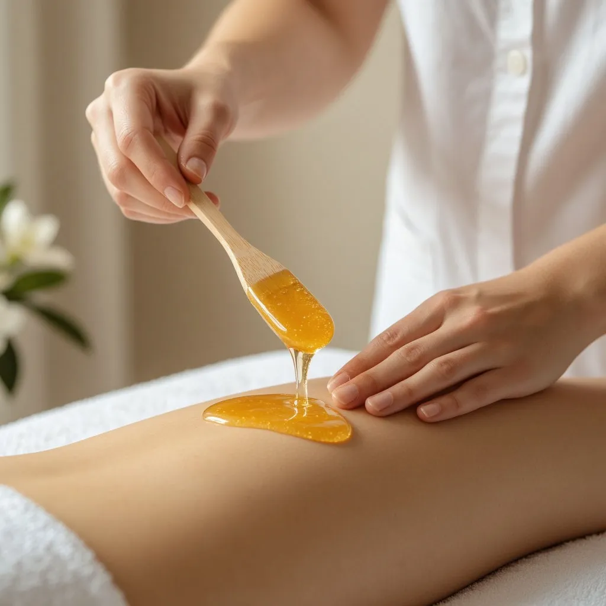

Лазерная эпиляция vs шугаринг: почему лазер выгоднее в долгосрочной перспективе

Шугаринг — отличный метод, спору нет. Натурально, доступно, быстро. Но есть одно «но»: он не уменьшает рост волос. Через 3–4 недели вы возвращаетесь в кабинет снова. И так годами. Лазерная эпиляция — это курс процедур, который даёт свободу на годы. Давайте посчитаем разницу.
Сравнение по деньгам: считаем на 5 лет
Шугаринг глубокого бикини в Москве: 2 000–2 500 ₽ в месяц × 12 месяцев = 24 000–30 000 ₽ в год. За 5 лет — 120 000–150 000 ₽. Лазерная эпиляция той же зоны: курс из 6 процедур в LaserSilk стоит 13 000 ₽. Разница более чем в 10 раз. Даже если через несколько лет потребуется один поддерживающий сеанс — это плюс 2 500 ₽. Всё равно выгода колоссальная.
Сравнение по ощущениям
Шугаринг — это отрыв волос с корнем. Резкая боль на 1–2 секунды. Лазер с охлаждением — это тепло и холод одновременно. Большинство клиентов, попробовавших оба метода, говорят, что лазер комфортнее. Особенно на чувствительных зонах вроде бикини.
Вросшие волосы: главная проблема шугаринга
После шугаринга волос отрастает заново и часто врастает под кожу — особенно в зоне бикини и на ногах. Это болезненно и некрасиво. Лазер решает проблему кардинально: волос просто перестаёт расти, вросшим неоткуда взяться.
Время и удобство
Шугаринг: 12 визитов в год × 30 минут = 6 часов в год. Каждый год. Плюс отращивание волос до 5 мм перед процедурой — ходить с щетиной минимум неделю. Лазер: 6 визитов за весь курс. Между процедурами можно бриться без ограничений.
Что выбрать
Шугаринг — как такси: платите за каждую поездку. Лазер — как собственный автомобиль: вложения в начале, свобода на годы. Если вы устали от ежемесячных процедур, врастающих волос и хотите забыть о бритве — лазерная эпиляция ваш выбор.
Попробуйте лазер вместо шугаринга
Первый сеанс со скидкой 30%. Приходите в студию у м. Водный стадион и почувствуйте разницу.
ЗаписатьсяЗвоните: 8 (991) 574-47-17
подскажем, какая эпиляция вам подходит.